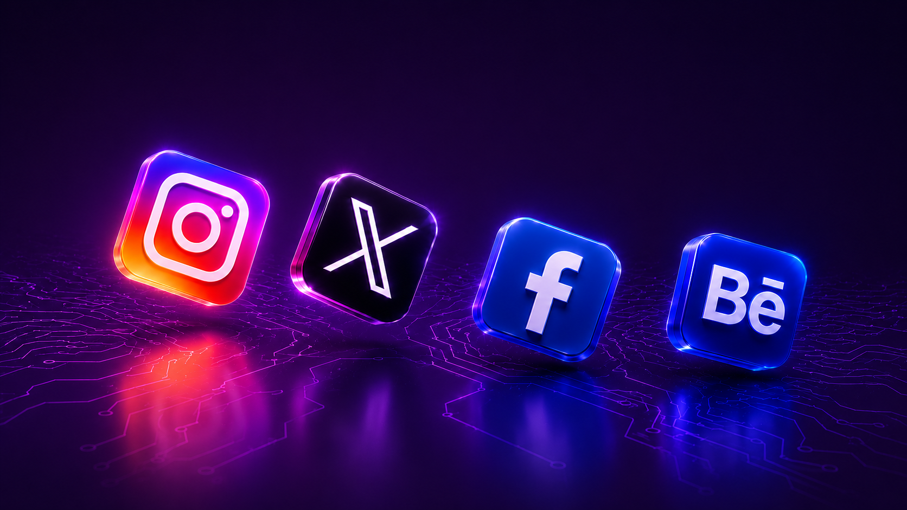
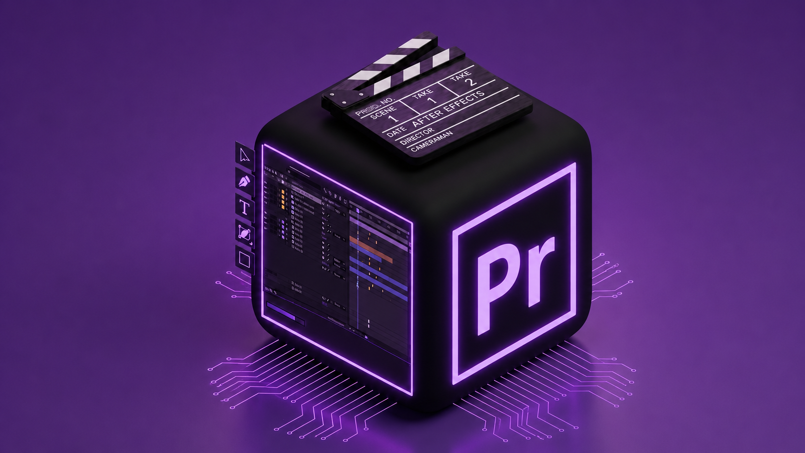
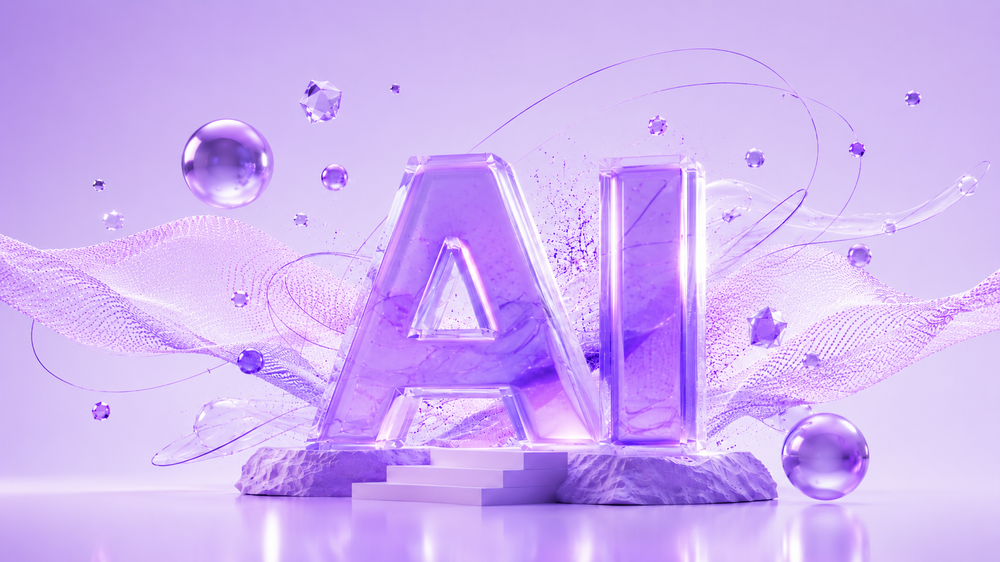
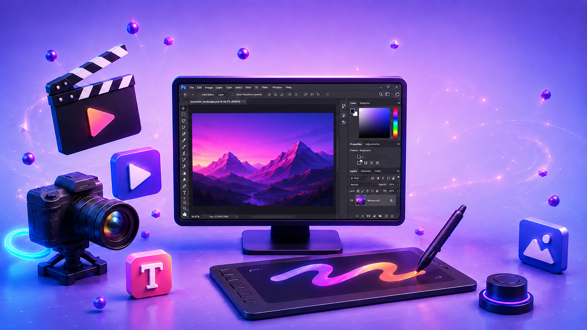
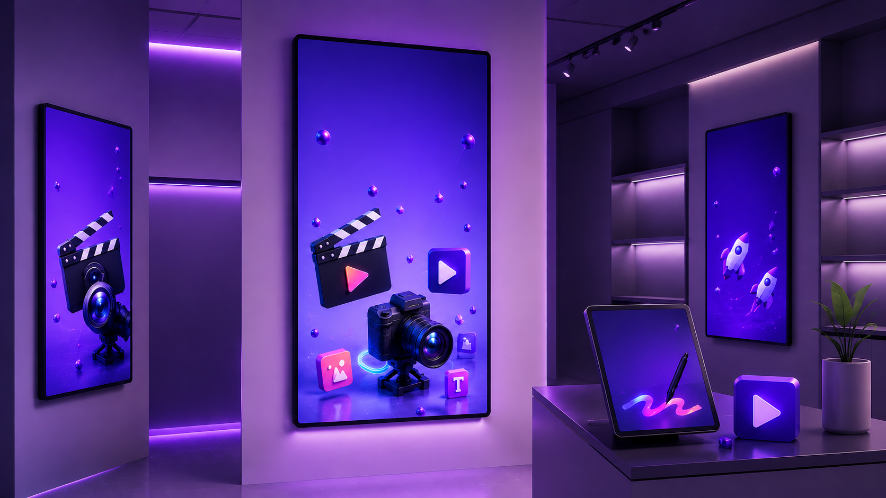
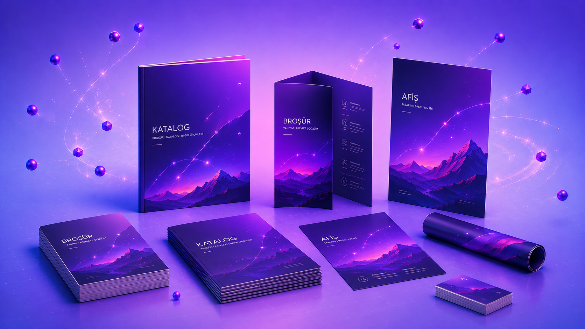

Selected Portfolio
Sosyal medya projeleri, dijital içerik üretimleri, yapay zeka destekli görseller, ürün fotoğraf çekimleri ve basılı tasarım çalışmalarından seçilmiş portfolyo.
Social Media
Motion Design
Illustration
AI Visual
Photography
Digital Screens
Print Design
Corporate


Sosyal Medya İçerikleri
Portfolyoyu Aç

Dijital İçerik & Hareketli Tasarım
Portfolyoyu Aç
Dijital İllüstrasyon
Portfolyoyu Aç

Yapay Zeka Destekli Görsel Üretim
Portfolyoyu Aç

Ürün Fotoğraf Çekimleri & Post-Prodüksiyon
Portfolyoyu Aç

Mağaza İçi Dijital Ekranlar
Portfolyoyu Aç

Katalog & Basılı Materyaller
Portfolyoyu Aç
Promosyon & Kurumsal Tasarımlar
Portfolyoyu Aç